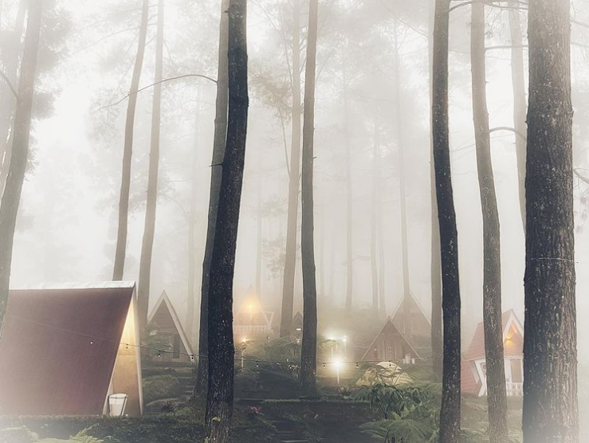

|  |  |
 |
Tiamor Cafe adalah sebuah cafe bernuansa alam yang terletak di Jalan Raya Baturraden, Dusun I, Karangtengah, Kec. Baturraden, Kabupaten Banyumas, Jawa Tengah. Saat langit sedang cerah, terlihat pemandangan kota purwokerto di sebelah selatan. Di cafe ini tersedia berbagai macam pilihan menu makanan seperti pasta, chicken wings, cake, dessert, sorbet, tea, dan coffe.

Jl Raya Baturraden, Dusun I, Karangtengah, Baturraden, Kabupaten Banyumas, Jawa Tengah
instagram:@tiamorcafe
Kedai Oramen, Purwokerto Timur merupakan sebuah tempat makan yang berada di Jl. KH. Moch. Safei No.2449, Kebondalem, Purwokerto Lor, Kec. Purwokerto Timur, Kabupaten Banyumas, Jawa Tengah. Rumah makan ini menyajikan berbagai menu ramen, sushi, bento, dan makanan serta minuman asal Jepang lainnya dengan harga yang terjangkau.
instagram:@kedai_oramen
Waroeng Steak adalah salah satu tempat makan di Purwokerto yang menyajikan berbagai macam steak. Terletak di dekat Pasar Wage membuat tempat makan ini berada pada lokasi yang strategis. Tersedia steak ayam, beef, dan ikan yang disajikan diatas hot plate lalu diberi bumbu barbeque di atasnya. Terdapat juga berbagai macam minuman yang menarik seperti coffe, milkshake, dan float.
Jl. Mt Haryono No.3A, Purwokerto Wetan, Kec. Purwokerto Timur, Kabupaten Banyumas, Jawa Tengah
instagram:@waroengsteak
Hutan Pinus Limpakuwus wisata hutan pinus yang diperkirakan telah berusia kurang lebih 30 tahun dengan tinggi pohonnya yang menjulang tinggi dan dipenuhi oleh rimbun daunnya. Susunan pohon pinus di Limpakuwus juga sangat rapi sehingga dilihat dari sekilas saja nampak indah. Tiket masuk ke area hutan pinus ini juga masih cukup terjangkau, hanya Rp. 15.000,-/orang. Selain menawarkan keindahan alam berupa hutan pinus, disini juga tersedia beberapa wahana/kegiatan menarik yang dapat dicoba seperti ATV, Mountain Slide, jembatan gantung antar pohon, playground, paint ball, dan beberapa spot foto.
Limpakuwus, Sumbang, Kabupaten Banyumas, Jawa Tengah
instagram:@hutanpinuslimpakuwuss
Telaga Kumpe merupakan salah satu destinasi wisata di Jawa Tengah yang patut dikunjungi saat akhir pekan. Tempat ini masih alami dengan pemandangan berupa perbukitan hijau dan pepohonan disekelilingnya yang sangat cocok bagi pecinta foto alam atau pedesaan. Selain tempatnya yang asri, kalian juga bisa menikmati udara sejuk disekitarnya. Ditambah dengan suara alami seperti kicauan menambah kesan alami di tempat ini.
Dusun III, Gununglurah, Cilongok, Kabupaten Banyumas, Jawa Tengah
instagram:@telagakumpeofficial
Lokaswisata Baturraden merupakan salah satu pilihan destinasi wisata yang ada di Kabupaten Banyumas, Provinsi Jawa Tengah. Lokawisata Baturraden termasuk wisata pegunungan mengingat lokasinya yang berada di kaki Gunung Slamet, dengan ketinggian 640 meter di atas permukaan laut. Lokasi tepatnya berada di Dusun I Karangmangu, Kecatan Baturaden, Banyumas, Jawa Tengah. Baturraden sudah dikenal sebagai lokawisata sejak tahun 1928. Hal ini imbas dari daerah sekitarnya yang menjadi tempat hunian para pejabat Belanda.
Dusun I Karangmangu, Karangmangu, Kec. Baturaden, Kabupaten Banyumas, Jawa Tengah
instagram:@lokawisata_baturraden
PURWOKERTO FOOD AND TRAVEL |
 purwokertofoodtravel@gmail.com
purwokertofoodtravel@gmail.com
|
| @purwokertofoodtravel | |
| Sebuah situs yang menyediakan berbagai informasi mengenai kuliner dan wisata yang ada di Kota Purwokerto, Kabupaten Banyumas. |
 087812819109
087812819109
|
|
Purwokerto, Banyumas, Jawa Tengah
|